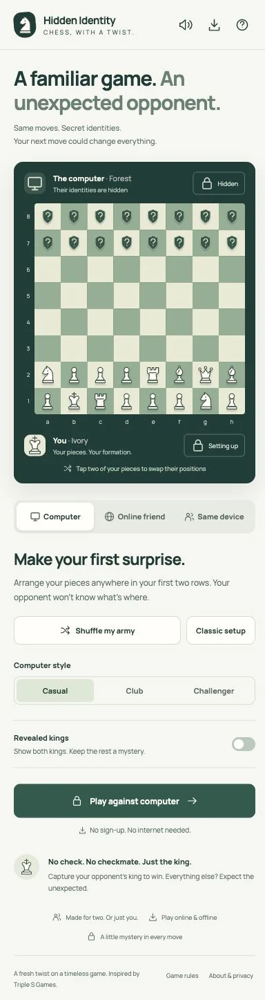
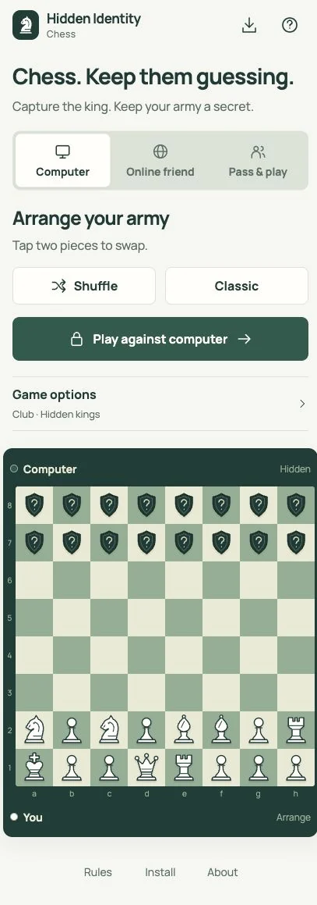

Before and after, same scale

A headline, the board, three mode tabs, a heading, two arrange buttons, the computer style, the kings option, and only then Play. On a phone you had to scroll past the whole board to start.

Mode tabs, Shuffle and Classic, then Play. Game options fold into one row that shows its current settings. The board follows below, where you tap two pieces to swap them.
The outlined box is the Play button. Both are the game's own review captures; the dashed line is drawn at 844px down each page.